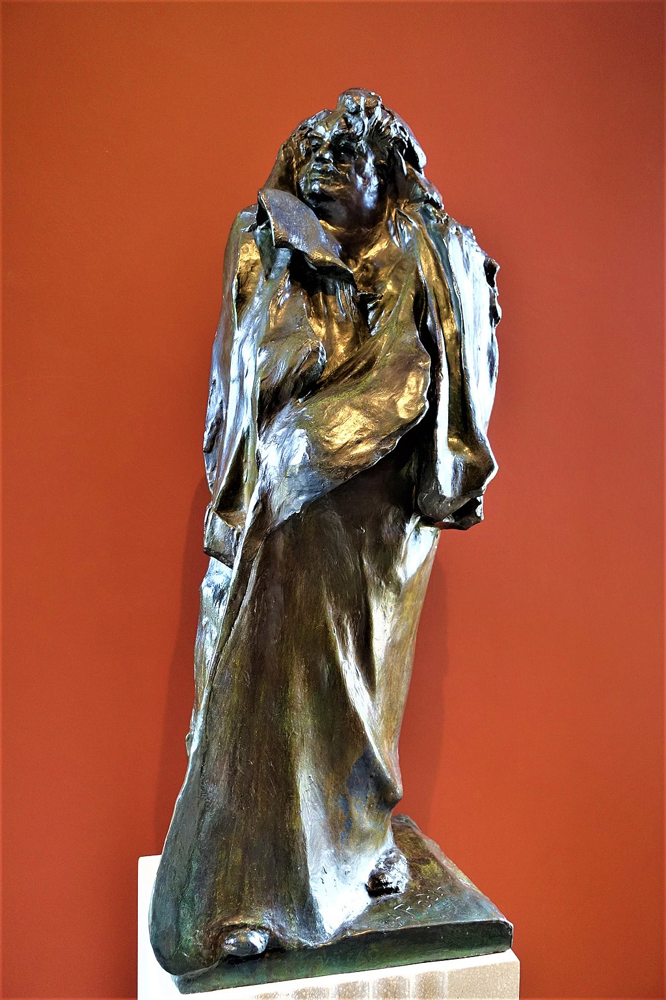

<head>
<meta charset="UTF-8" />
<meta name="keywords" content="drawing, painting" />
<meta name="description" content="drawings by Sunjy" />
<title>Sunjy</title>
<link rel="shortcut icon" type="image/x-icon" href="../../mImages/mCommon/favicon.ico" media="screen" />
<link rel="stylesheet" type="text/css" href="../../mCsses/mCommon/mCssA.css" />
<link rel="stylesheet" type="text/css" href="../../mCsses/mCommon/mCssB.css" />
<link rel="stylesheet" type="text/css" href="../../mCsses/mCommon/mCssC.css" />
<link rel="stylesheet" type="text/css" href="../../mCsses/mCommon/mCssD.css" />
<link rel="stylesheet" type="text/css" href="../../mCsses/mContent/mCssA.css" />
<link rel="stylesheet" type="text/css" href="../../mCsses/mContent/mCssB.css" />
<link rel="stylesheet" type="text/css" href="../../mCsses/mContent/mCssC.css" />
<link rel="stylesheet" type="text/css" href="../../mCsses/mContent/mCssD.css" />
</head>
<script type="text/javascript" src="../../mScripts/mContent/mContentAA.js" /></script>
<script type="text/javascript" src="../../mScripts/mContent/mContentAB.js" /></script>
<script type="text/javascript" src="../../mScripts/mContent/mContentAC.js" /></script>
<script type="text/javascript" src="../../mScripts/mContent/mContentAD.js" /></script>
<script type="text/javascript"></script> 
<script type="text/javascript">
document.write('<div class="mImgAbsolute"></div>');
/*
document.write('<p class="mFontSizeBColor" />From a white paper...</p>');
document.write('<table class="center"><tr><td>');
document.write('');
document.write('</td></tr></table>');
*/
</script>


<script type="text/javascript">
document.write('<p class="mFontSizeBColor" />Balzac</p>');
document.write('<p class="mFontSizeSColor" />“Balzac” by Auguste Rodin was created as a memorial to the French novelist Honoré Balzac. According to Rodin, the sculpture aims to portray the writer’s persona and not a physical likeness.<br><br>The work was commissioned in 1891 but the full-size plaster model which came under criticism and was rejected by the writers’ association.<br><br>Rodin moved it instead to his home, and today the artwork is considered the first truly modern sculpture. Casts and various studies of the statue can today be found in many museums.<br><br>Rodin met with varying degrees of disapproval from the organizations that sponsored his commissions. As one of the founders of modern sculpture, he did not set out to rebel against tradition.<br><br>Rodin was schooled traditionally, and he had a skilled artisan’s approach to his work, additionally he did want recognition. Ultimately, Rodin did gain the support from essential sources that propelled him towards fame.<br><br>In 1939, nearly 22 years after Rodin’s death the model was cast in bronze for the first time and placed on the Boulevard du Montparnasse, Paris France.<br><br>Today casts and various studies of Balzac by Auguste Rodin can be found in many museum or art gallery collections around the world.<br><br>Honoré de Balzac<br><br>Honoré de Balzac (1799 – 1850) was a French novelist and playwright. Balzac is regarded as one of the founders of realism in European literature.<br><br>He is renowned for his multi-faceted complex characters. Even inanimate objects were imbued with subtle characteristics such as the city of Paris, which takes on many human qualities in his writings.<br><br>His writing influenced many famous writers, as well as philosophers.<br></p>');
document.write('<table class="center" /><tr><td>');
document.write('<br>The work was commissioned in 1891 but the full-size plaster model which came under criticism and was rejected by the writers’ association.<br><br>Rodin moved it instead to his home, and today the artwork is considered the first truly modern sculpture. Casts and various studies of the statue can today be found in many museums.<br><br>Rodin met with varying degrees of disapproval from the organizations that sponsored his commissions. As one of the founders of modern sculpture, he did not set out to rebel against tradition.<br><br>Rodin was schooled traditionally, and he had a skilled artisan’s approach to his work, additionally he did want recognition. Ultimately, Rodin did gain the support from essential sources that propelled him towards fame.<br><br>In 1939, nearly 22 years after Rodin’s death the model was cast in bronze for the first time and placed on the Boulevard du Montparnasse, Paris France.<br><br>Today casts and various studies of Balzac by Auguste Rodin can be found in many museum or art gallery collections around the world.<br><br>Honoré de Balzac<br><br>Honoré de Balzac (1799 – 1850) was a French novelist and playwright. Balzac is regarded as one of the founders of realism in European literature.<br><br>He is renowned for his multi-faceted complex characters. Even inanimate objects were imbued with subtle characteristics such as the city of Paris, which takes on many human qualities in his writings.<br><br>His writing influenced many famous writers, as well as philosophers.<br>" />');
document.write('</td></tr></table>');
</script>


